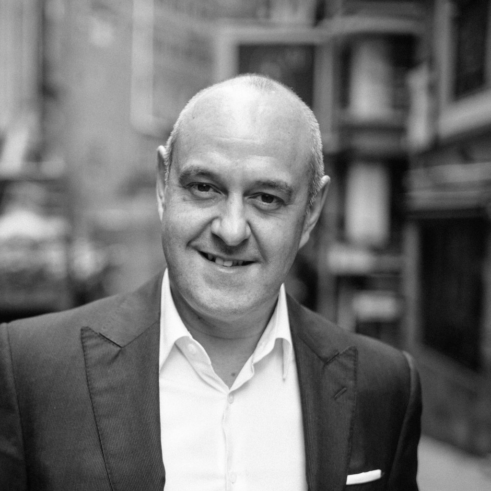

Husband Retail — Hong Kong, since 1998.
We help developers, landlords and investors make luxury retail destinations perform — in Hong Kong and in more than twenty markets on three continents.
The doors, open, centred. The film ends here for now.Shots 3–12 are not generated yet — nothing stands in for them. The opening is V0a take 1, stitched on instruction (the playbook rejected it for its own dissolve at 4.9–5.3 s); the vault shifts once where it hands to the loop. The phone plays the same three takes from a portrait centre crop (405 × 720) of the 16:9 plates; no portrait plate was generated. The globe is a generated plate with approximate geography, so the markers sit on its drawn cities rather than on survey positions: a sphere fitted to the plate's horizon and city glows places each city's real coordinates, snapped to the drawn city and tracked through the zoom; the drawn coastlines drift 10–50 px from the real ones. Not marked, on the far side or out of frame: London (Covent Garden), Dubai and Lusail, Sydney, Singapore. The zoom is steered to hold Hong Kong in place, because the plate itself zooms toward the sea west of it.The globe is a generated plate with approximate geography; the markers sit on its drawn cities, and the zoom is steered to hold Hong Kong in place.
We act for the principals in retail property: developers, landlords, asset managers and institutional investors. Our clients develop shopping centres, lifestyle destinations, integrated resorts and mixed-use schemes, or they acquire and manage them.
We do not advise retailers on the occupier side: store networks, formats, operations. The strategy houses do that work. If you hold the asset, or intend to, this is the firm for it.
A retail destination is one continuous piece of work, and we treat it that way: development consultancy, leasing, positioning and repositioning, and investment advisory, from one team.
Development consultancy · 01 of 04
Trade area, catchment, competing supply and spend capture. From that study come the concept, the positioning, the tenant mix and a merchandising plan that zones the GLA so the whole asset trades.
Leasing · 02 of 04
Leasing strategy, project marketing, negotiation and documentation, from heads of terms to signature. A plan nobody signs is just paper. We only handle leasing for developments we have worked on.
Positioning and repositioning · 03 of 04
We set the positioning, run the marketing programme and write the asset plan that holds the tenant mix to the concept. Repositioning starts as a new project does, with an honest read of the trade area and the existing mix, and ends with a plan for the leasing and the marketing programme.
Investment advisory · 04 of 04
We advise on acquisitions, disposals and the business planning behind them: feasibility, the retail assumptions in the underwriting, the asset plan the deal depends on.
The large property firms are good at what they do. Offices in every market, data on everything. For valuations, agency work at scale and research, they are often the right appointment.
We offer something narrower. Senior attention on one asset at a time, and one discipline that shapes everything: we only handle leasing for developments we have worked on.
We will not lease a centre we did not help plan.
If you want your asset treated as one file among hundreds, we are the wrong appointment.
We take few mandates and give each the founder's time. The people you meet in the first conversation do the work.
We only handle leasing for developments we have worked on, so we cannot hand you a plan we would not have to deliver ourselves.
Every recommendation in our reports is one we may have to sell later. That keeps the advice honest.
It begins with a conversation about one asset. Yours. We ask what you hold or intend to build, where it stands in its cycle, and what the mandate should deliver. If we can do the work, we scope it and agree it with you before anything starts.
The people you meet in that first conversation do the work. Husband Retail is a small firm by design. Paul Husband leads every mandate, and the team around him has both planned centres and leased them. That combination is rarer than it sounds.
Someone who has negotiated heads of terms with a luxury brand's head of real estate writes a very different merchandising plan from someone who has only modelled one.
The work runs in sequence. One team from first meeting to handover, the same senior people throughout.
More than 100 projects advised, sixty-plus of them planned and leased, in more than twenty markets across Asia, the Middle East and Europe.
Also advised: London, Doha, Dubai, Sydney and Singapore.

More than 30 years in Asian retail real estate, first at Swire Properties, then under his own name.
Paul Husband was head of marketing at Swire Properties for around ten years, joining in 1988 with Pacific Place in Hong Kong. He founded Husband Retail in 1998 and has since planned more than 100 retail projects across Asia Pacific and the Middle East. He wrote The Cult of the Luxury Brand in 2006 and taught as a professional instructor for the International Council of Shopping Centres in Asia Pacific.
One message is enough to begin. Name the asset, its location and its stage: a site, a master plan, a scheme under construction, or a centre already trading.
Room 301, 8 Queen's Road East, Wanchai, Hong Kong · +852 2659 9280
The ones that come up in the first conversation, answered the way we answer them in the room.
For owners only. Developers, landlords and investors instruct us. We negotiate with brands on behalf of the asset, never the reverse. The advice carries no occupier conflict.
We tell you, in writing, before you commit capex. A study that only ever says yes is worthless. When the answer is no, we set out what would have to change for it to become yes.
Often alongside them. We have done this before, usually holding the concept, the retail mix and the luxury leasing while they run the rest of the scheme. We are clear about the division of scope.
The senior people you meet at the start. Paul Husband leads every mandate personally. We do not run a model where partners win the work and pass it down. The firm stays small so that this stays true.
We have recruited them into centres we planned. No adviser can commit a named brand. We can shape the asset those brands ask for, then make the case to people we have dealt with for years.
Usually, yes. Repositioning is one of our four practice areas. It starts as a new project does, with an honest read of the trade area and the existing mix, and ends with a plan for the leasing and the marketing programme.
We have advised in more than 20 markets across Asia, the Middle East and Europe, from Hong Kong and Seoul to Doha, Dubai and London. We are based in Hong Kong and travel to the asset.